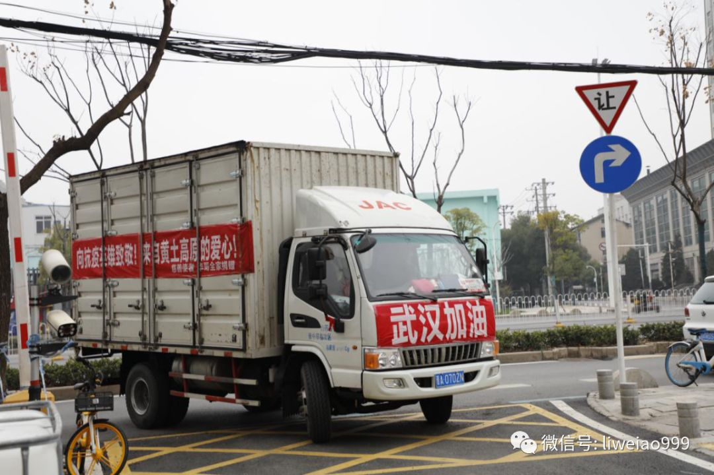
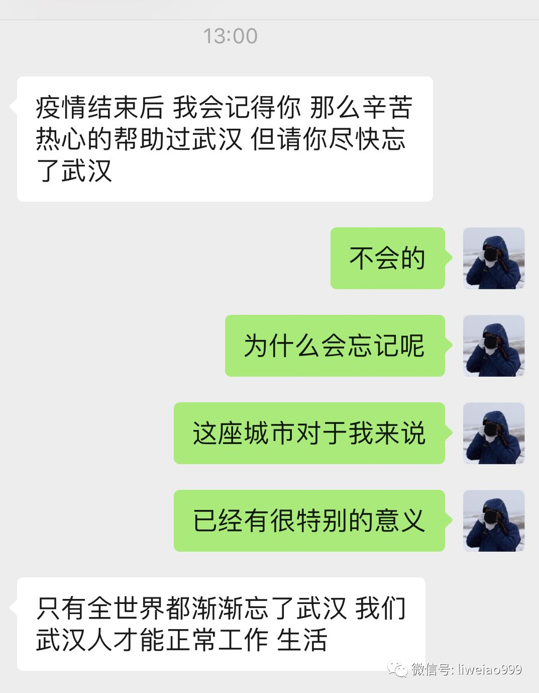

口述实录 | 我在武汉方舱医院14天，有了一种胜利在望的感觉
原文链接 备份链接 从2月7日到现在，一方面大家的活动越来越丰富，另一方面由于轻症患者比较多，人们病情都慢慢恢复。所以，我看到每个人脸上的笑容都变多了。 口述 | 余 毅 整理 | 王仲昀 这一个月终于要过去了。 2月21日上午，在等待几 …
“如果说什么是人生绝望之一，那我想说的是，当你最怕的那一件事情，最束手无策的事情，然而他（它）就在你的身上发生。2020年春节前后武汉就爆发了一场前所未有的灾难，正因为它是前所未有的新型肺炎病毒，前期危重患者较多，人们没有太多的经验来应对它，几乎给每个人带来了恐慌。
我也没有逃脱这次新冠肺炎，初诊断是新冠肺炎疑似病人，当拿到诊断的那一刻，完全出乎了我的意料，我首先是不敢相信，很快自己内心也崩溃了。那一刻我确实感觉自己很无能为力，束手无策，无比的紧张和恐惧。本来食欲、精神一切都很好的我，当天就出现了严重的食欲不振、呕吐、头晕等不适。虽然脑海里知道这个病不是什么不治之症，我反复告诉自己要勇敢，切勿恐慌过度，可是终究还是控制不了自己。这些症状持续了几天，在亲朋好友的各种鼓励下，自己才慢慢有所改善。身为一名医务人员患者，我终于明白一个人的精神信念崩溃是一种比疾病本身更为致命的打击，内心一旦崩溃会使本身病情加重并且不利于恢复。
通过核酸检测终究确诊是新冠肺炎患者，很快就被社区告知需要去方舱医院住院治疗。在去医院的车上，难免有些担心的想法，应该住多少天呢，顺利吗？还难免担心的是会缺这少那。但终究还是要自己面对的，不一会我们到了目的地，车刚停下来就有好几个穿防护服的护士过来帮我们提过手中的行李，手中顿时轻松了许多，更多的是感动，医务人员帮我们拿行李还是我第一次经历，当跟着医务人员走到自己住的床位时，看到铺好的床被，完整的日常用品时，我的内心被家的感觉彻底填满。当然方舱里的氛围也影响了我，周围的病人看起来精神都不错，有三两聚集聊天的，有成群跳广场舞的，做广播体操的，散步的，打八段锦的……虽然在住院，但是人们还是跟往常一样充满活力，积极乐观。
在这里我最应该感激我们C区所有的医务人员，有熊煜、郝应祥医生，谢萍、陈飞翔、徐琪、王成芳、肖燕、江丽瑶、黄祺婷、孙婷护士等等所有医务人员，我忠（衷）心地感谢你们，有你们给予了我们无微不至的照顾和无私的关怀。在我们生活照料上是最给力，你们是最称职的监督委员，督促我们锻炼身体，你们是最无私的最细心的医务工作者，你们不得不离开自己的亲人朋友们，虽然有时候无法克制的（地）想家，但你们仍然不顾个人安危，克服一切困难，坚持抗疫，把救死扶伤当做了人生最重要的事业。
听说外面已经繁花盛开了，我希望这次疫情能够快点过去，以后相见可以不用戴口罩，让我看到你们伟大的样子，还可以带你们逛次武汉，武汉随时都热烈欢迎你们。”
……
2020年3月，我在武汉体育中心的方舱医院里，读到了这样一封信。我一字一句地把它抄录在这里。

（武汉体育中心方舱医院患者写给医疗队员的一封信。2020年3月2日，李微敖 摄）
信是曾经住在这里C区20号床位的新冠病毒肺炎患者写给医疗队员们的，患者本人在当天上午，治愈出院了。
医疗队员们有些感慨地我说，“没想到她记住了我们每一个人的名字”。
类似的事情，这一个多月来，我在武汉多次亲眼见到。
2月29日下午，在雷神山医院门口，我偶然遇到了5位出院的病人。
他们再三向医护人员表示感谢，“谢谢你们，谢谢你们，这段时间太感谢你们了”。
临到上车时，一位女士，还向送她出来的医院工作者，双手竖起了大拇指，“你们是最棒的！”

（2020年2月29日，雷神山医院门口，出院的患者向医护人员双手竖起了大拇指。 李微敖 摄）
2月27日，在中山路，我一位武汉老大哥崔一兵先生的餐厅门口，我遇到了一辆从山西运城开过来的捐赠车辆。

（2020年2月27日，从山西运城开到武汉来捐赠苹果的车辆。李微敖 摄）
车上装的是苹果，“慈善使者华哥”采购，捐赠给武汉。崔大哥的餐厅，分到了200箱，然后，他们每天再把这些苹果，连同盒饭一起，再送到住在隔离点的人们那里。
崔大哥对他的员工、同行、朋友们说，一定要善待这些外地支援武汉的货车司机们：
“他们连续开车一二天来到武汉，路上没有吃住的地方，每天就在车上吃泡面和干粮，有人甚至在武汉口罩也没有，看了让人心痛流泪。每次遇到他们，我就让潮江宴的员工必须送他们可口的热盒饭，每人一提牛奶，一件水果。如果我是高速路口的交警和公职人员，不仅仅看到首长，军人，医护人员，看到他们同样立正敬礼，代表武汉人民给他们温暖，给他们尊重，给他们鼓励。无论他们是道德高尚，还是为生活所迫送货到物资孤岛的武汉，都同样是为武汉，为全国，甚至为人类抗疫做贡献。现在一些司机得不到尊重，武汉疫情又严峻，吃住极其不便，出城又很困难，弄不好还在被隔离半个月做不成生意，导致外地司机不愿意承接到武汉的货物，让武汉的物流越来越不顺畅……”
除了对于医务工作者的感恩，对于志愿者们的感恩，对于全国、全世界捐款捐物的人们感恩，就连我们这些微不足道的记者，也时时被武汉的朋友们所记挂、所感激，这也让我时常感到羞愧。
一位在武汉的律师朋友跟我说，“记者要有啥生活苦难你就说说我来想办法”，“我总觉得武汉欠这帮患难与共的记者什么”。

一位未曾谋面的网友也跟我讲，“疫情结束后，我会记得你，那么辛苦热心的帮助过武汉……”

这些只是我个人亲历的几个小例子，类似的事情，更令人感动的事情，在武汉，在湖北，发生了不知道多少桩、多少起。
知恩、感恩，是人类最基本的良知所在。
这样的良知，中国人有，湖北人、武汉人，当然也有——这无需再被要求，更无需被开展、教育。
人民心中有杆秤——与生俱来的一杆秤，称得起恩情；自然，也称得起另一面。
（有感昨天写的小文，仅仅存在了十几分钟，就被消失。所以，我今天又截取、修改了其中的一部分——纯粹满满“正能量”的这部分，再发布在这里。还是那句话，这些天来在武汉所见所闻所感的心里话：武汉的人民，足够坚强、足够忍耐，也足够懂得感恩！）
长按二维码向我转账
敖虽资浅，愿为良记
受苹果公司新规定影响，微信 iOS 版的赞赏功能被关闭，可通过二维码转账支持公众号。
原文链接 备份链接 从2月7日到现在，一方面大家的活动越来越丰富，另一方面由于轻症患者比较多，人们病情都慢慢恢复。所以，我看到每个人脸上的笑容都变多了。 口述 | 余 毅 整理 | 王仲昀 这一个月终于要过去了。 2月21日上午，在等待几 …
原文链接 备份链接 2020年2月23日，武汉封城整一个月。以下是武汉在过去一个月中的31个片段，它们来自一线记者的所见、来自市民在社交平台上的记录，它们汇聚在一起，构成了这座城市最难忘的一段记忆。 策划*****｜*********《人 …
原文链接 备份链接 跳广场舞、练瑜伽、打太极、复习备考……每天我们都能从社交媒体上了解到武汉“方舱医院”内患者们的日常生活。这些看似平常的活动，却为紧张的抗疫工作带来了一丝活力与鼓舞。 2月3日晚，武汉市宣布将在武汉国际会展中心、洪山体育 …
原文链接 备份链接 疫情严峻，武汉仍在不断征集新冠肺炎床位。重压之下，各家医院肿瘤科「只出难进」，有患者被迫出院，通过网络发帖求助；也有患者试图寻求省外求医路，却被两边「入院接收单」与「通行证」夹在中间，难寻答案。 —— 同一个家庭里的新 …
原文链接 备份链接 岛语 非常时期，武汉成了全国人民挂念、祈福的城市。封城后，武汉人民的真实生活是什么样？ 武汉在发生哪些变化？ 正和岛自1月26日起特别推出“叶青专栏”。叶青是一位定居武汉40年的市民，也是一名学者和官员。在过往多期的专 …